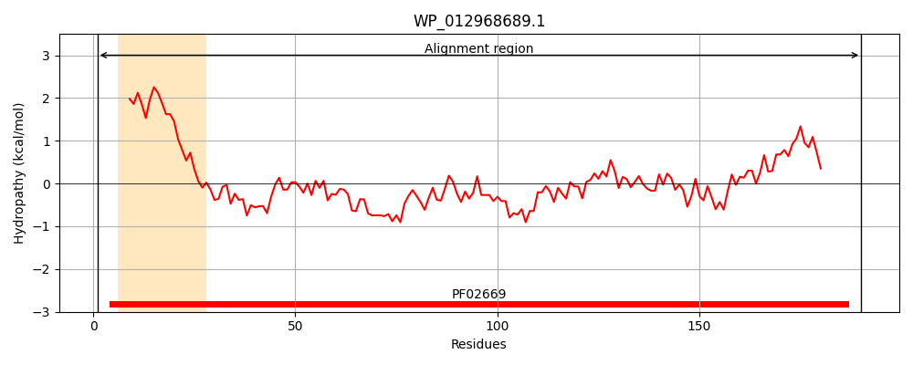
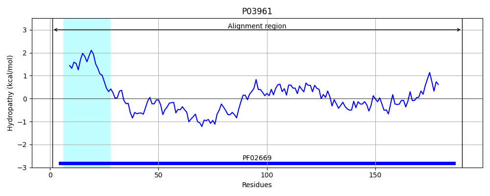
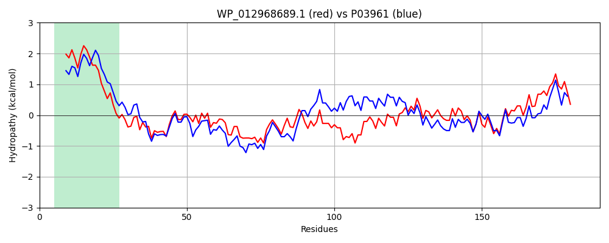

Hit Accession: P03961
Hit TCID: 3.A.3.7.1
Hit Description: gnl|BL_ORD_ID|8288 gnl|TC-DB|P03961|3.A.3.7.1 Potassium-transporting ATPase C chain (EC 3.6.3.12) (Potassium- translocating ATPase C chain) (ATP phosphohydrolase [potassium- transporting] C chain) (Potassium binding and translocating subunit C) - Escherichia coli.
Mach Len: 190
e:0.000000
Query TMS Count : 1
Hit TMS Count: 1
TMS-Overlap Score: 1.150000
Predicted Substrates:CHEBI:8345;potassium(1+)
BLAST Alignment:
Score: 673 , Bit scores: 263 bits, E-value: 5.1e-91, Alignment length: 190, Percentage identity: 70
Query: 1 MSLIRPALVLFILLTLLTGGVYPLLTTSLGQWWFNPQANGSLIRLNGEVRGSGLLGQNFTAAGYFQGRPSATAETADNPMASGGSNLAASNPALDKAVSERVQALRAANPDADPRVPVELVTTSASGLDNNLTPAAALWQVPRVAKARQLSVEQVSQLVNQATQTPLLSFLGQPVVNILQLNMALDALKD 190
MS +RPAL FI L L+TGGVYPLLTT LGQWWF QANGSLIR VRGS L+GQNFT GYF GRPSATAE NP ASGGSNLA SNP LDK ++ RV ALRAANPDA VPVELVT SASGLDNN+TP AA WQ+PRVAKAR LSVEQ++QL+ + +Q PL+ ++GQPVVNI++LN+ALD L +
Sbjct: 1 MSGLRPALSTFIFLLLITGGVYPLLTTVLGQWWFPWQANGSLIREGDTVRGSALIGQNFTGNGYFHGRPSATAEMPYNPQASGGSNLAVSNPELDKLIAARVAALRAANPDASASVPVELVTASASGLDNNITPQAAAWQIPRVAKARNLSVEQLTQLIAKYSQQPLVKYIGQPVVNIVELNLALDKLDE 190 | Protein Hydropathy Plots: |
|---|
|  |  |
Pairwise Alignment-Hydropathy Plot:
|
|---|
|  |